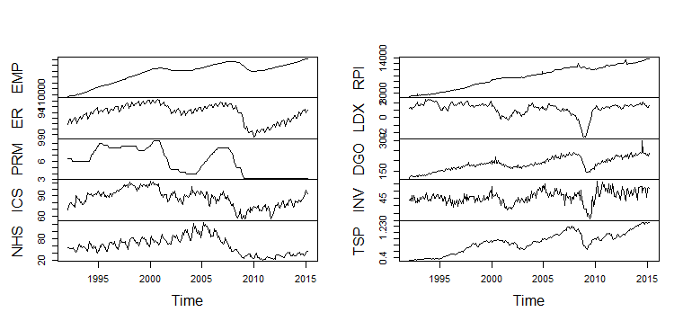
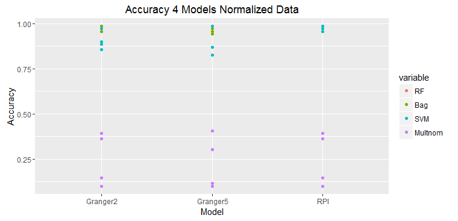
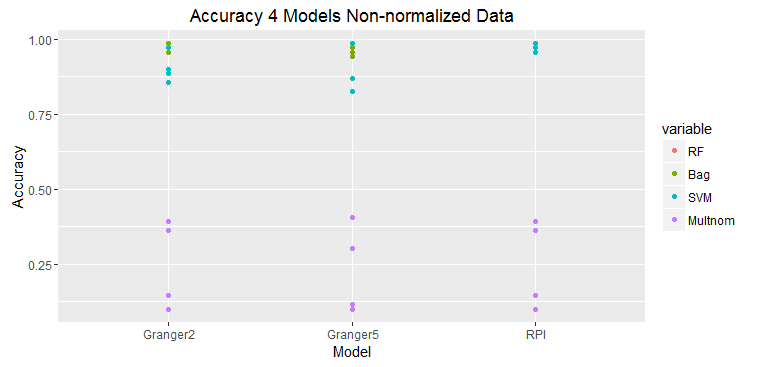
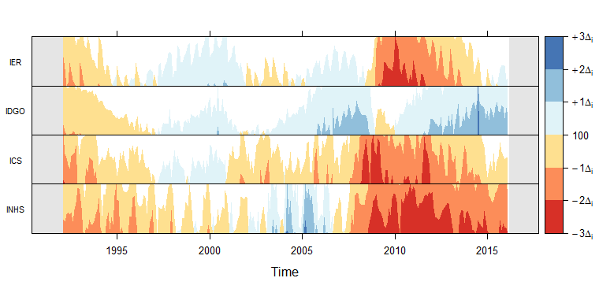

http://klopfer4.github.io/analytiks/
Feature Selection in Economic Predictive Analytics
The objective of this project is to explore feature selection techniques for economic predictive analytics. Feature selection is the process of choosing the best subset from the available features. The features are data attributes used to build predictive models.
In the problem of predicting economic performance, as in all predictive problems, the issue of deciding which features to use in model building is critical. This is true because some features are much better than others in predicting a given target variable, so in order to yield the best prediction, the most effective features must be discovered. Also, eliminating features that are not predictive prevents overfitting in the model, makes the model easier to interpret, and makes the model computationally economical.

Above are plotted some of the time-series used in the project. RPI (Real Personal Income) was the dependent variable and the other series were used as explanatory variables.
The most common type of time-series prediction is that using univariate time series models; for example, ARIMA (AutoRegressive Integrated Moving Averages). These types of forecasting methods look only at one time-series and predict its future from its past.
Our hypothesis is that other time series can be used to inform the direction of the response time series in focus. After all, the economy is a system and to assess its state requires multiple readings. Just as a doctor cannot take one measure of a patient, like body temperature or heart rate, and assess that state of that patients health, one measure of the economy cannot portray the state of the economy as well as several indicators.
A Hypothesis:
Economic time-series forecasts are improved by including other economic time series as explanatory variables.


The graphs above show that the prediction with only one variable, RPI, which is also the value to be predicted is the most accurate. Adding any addition time series deteriorates the prediction accuracy. This is just one set of data, but this typical of all of the experiments.
These two graphs show predictions on raw data and normalized data.
The results of prediction accuracy with multinomial regression was much worse than that for random forests, bagging, and support vector machines.
Some models sets were selected with Granger causality in mind: variables showed significant causalty but the results did not bear this out.
Is it possible to use multiple machine learning on different components of time series (e.g., seasonality, trends, cyclicity, irregularities)?
Can we use machine learning in conjunction with traditional time series models?
Can we use machine learning methods to parameterize simulation models that will enable more complete and accurate representation of economic systems but still enable them to be fitted to data from the real economy?
Visualization example:
